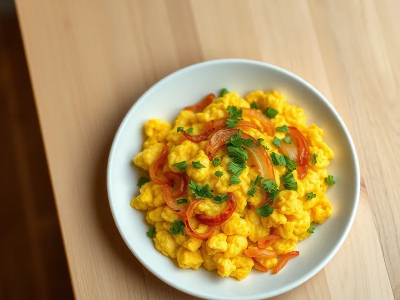

Чижи-пижи - яйца с луком по-грузински
Яйца, зажаренные на сливочном масле с карамелизованным луком и кинзой
20 мин2 порц.348 ккал на порциюБ 19 · Ж 26 · У 11Кавказская кухня
Открыть в приложении: порции, таймеры, список покупок
Продукты на 2 порц.
- Яйцо куриное5 шт
- Лук репчатый2 шт
- Сливочное масло25 г
- Кинза0,5 пучка
- Базилик по желаниюпо вкусу
- Соль1 щеп.
- Перец чёрный молотыйпо вкусу
Как готовить
- Нарежьте лук тонкими полукольцами, кинзу и базилик мелко порубите.
- Растопите сливочное масло на среднем огне и жарьте лук 8-10 минут, помешивая, пока он не станет мягким и золотистым.
- Слегка взболтайте яйца вилкой с солью и перцем - желтки и белки не должны полностью смешаться.
- Влейте яйца к луку и медленно помешивайте лопаткой 2-3 минуты, пока они не схватятся мягкими кусочками, но останутся влажными.
- Снимите с огня, добавьте зелень и перемешайте.
Совет. Не торопите лук: именно его сладость и золотистый цвет делают это блюдо, поэтому огонь не прибавляйте.